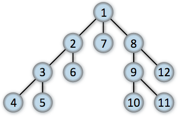
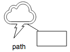

Joint API
This is the API reference to the open source JointJS core library. If you're looking for the Rappid diagramming toolkit documentation, you can find that here.
JointJS library exports three global variables: joint, V and g.
The joint namespace contains all the objects that you will use to build your diagrams.
Additionally, joint.version property tells you which version of JointJS you're using.
The V global is lightweight SVG library that we call Vectorizer
. This tiny library makes manipulation with SVG documents much easier. JointJS uses this library internally. Normally, you don't have to get in touch with this library at all but for advanced uses, it can be handy.
The g global is another lighweight library used internally by JointJS that provides many useful geometry operations. Again, you might not get in touch with this library but when you do have the need to perform geometric operations in your applications, you'll certainly find it helpful.
dia.Cell
The basic model for diagram cells. It's a Backbone model with a few additional properties and methods. The first one to mention is a unique identifier for the cell. Each cell has a unique ID that is stored in the id property.
dia.CellView
The view for the joint.dia.Cell model. It inherits from Backbone.View and is responsible for:
- Rendering a cell inside of a paper
- Handling the cell's pointer events
- Provides various methods for working with the cell (visually)
To find the view associated with a specific cell (model), use the findViewByModel method of the paper. For example:
var cellView = paper.findViewByModel(cell);dia.CellView.prototype.highlight
cellView.highlight([el[, options]])Highlights the cell view.
Arguments:
- el - if not provided, then the cell view's
$elwill be used -
options:
-
highlighter:
- name - the name of the highlighter (see highlighters)
- options - an options object that will be passed directly to the highligher specified by
name
- type - the kind of highlighting being done (embedding, connecting, magnetAvailability, or elementAvailability)
-
highlighter:
dia.Element
The model for diagram elements. It inherits from joint.dia.Cell with a few additional properties and methods specific to elements. These properties can be put into three groups:
Geometry
Coordinates of an element are stored in the position property that is an object with x and y keys. position can be accessed or set directly using the regular Backbone set()/get() methods or through the translate method.
Rotation angle is stored in the angle property. This angle is in degrees and the rotation origin is always considered to be the center of the element. angle can be also accessed or set directly using the regular Backbone set()/get() methods or through the rotate method.
Size of an element is stored in the size property that is an object with width and height keys. Again, size can be accessed or set directly using the regular Backbone set()/get() methods or through the resize method.
Presentation
Another important property is attrs which is an object with keys representing selectors that match subelements and values which are SVG attributes that will be set on the subelements. One can find a list of SVG attributes and their descriptions e.g. on MDN.
It is important to note that each joint.dia.Element defines an SVG markup which is then used by joint.dia.ElementView to render the element to the paper. For instance, the joint.shapes.basic.Rect element (that inherits from joint.dia.Element) defines its markup as follows:
<g class="rotatable"><g class="scalable"><rect/></g><text/></g>Therefore, in order to set a red fill color for the rectangle subelement, the attrs object should contain:
rect: { fill: 'red' }Again, it is not recommended to change the attrs object directly. Instead, use the attr method.
The z property specifies the stack order of the element in the SVG DOM. An element with a higher z level is in front of an element with a lower z level. (This also stands for links which have the exact same property.)
Nesting
The last two properties of elements are embeds and parent. These two are related to elements that contain or are contained withing other elements forming a hierarchical structure. embeds is a list of cell id's that are embedded inside the element. parent is an id of the parent element of the embedded one. When a parent element is translated, all its children get translated too.
dia.Element.events
The following list contains events that you can react on:
change- generic event triggered for any change on the elementchange:position- triggered when the element changes its positionchange:angle- triggered when the element gets rotatedchange:size- triggered when the element gets resizedchange:attrs- triggered when the element changes its attributeschange:embeds- triggered when other cells were embedded into the elementchange:parent- triggered when the element got embedded into another elementchange:z- triggered when the element is moved in the z-level (toFront and toBack)transition:start- triggered when a transition starts.transition:end- triggered when a transiton ends.
element.on('change:position', function() { alert('element moved') })dia.Element.ports
Ports
Many diagramming applications deal with elements with ports. Ports are usually displayed as circles inside diagram elements and are used not only as "sticky" points for connected links but they also further structure the linking information. It is common that certain elements have lists of input and output ports. A link might then point not to the element as a whole but to a certain port instead.
It's easy to add ports to arbitrary shapes in JointJS. This can be done either by passing a ports definition as an option in the constructor or using the ports API to get/add/remove single or multiple ports. For more information on how to define ports please see Port configuration section.
Port API on joint.dia.Element
Port configuration
// Single port definition
var port = {
id: 'abc',
group: 'a',
args: {},
label: {
position: {
name: 'top',
args: {}
},
markup: '<text class="label-text" fill="blue"/>'
},
attrs: { text: { text: 'port1' } },
markup: '<rect width="10" height="10" stroke="red"/>'
};
// a.) add a port in constructor.
var rect = new joint.shapes.basic.Rect({
position: { x: 50, y: 50 },
size: { width: 90, height: 90 },
ports: {
groups: {},
items: [ port ]
}
});
// b.) or add a single port using API
rect.addPort(port);
| id | string | It is automatically generated if no id provided. IDs must be unique in the context of a single shape - two ports with the same port id are therefore not allowed (Element: found id duplicities in ports. error is thrown).
|
| group | string | Group name, more info in groups section. |
| args | object | Arguments for the port layout function. Available properties depends on the type of layout. More information could be found in layout.Port. |
| attrs | object | JointJS style attribute definition. The same notation as the attrs property on Element. |
| markup | string |
Custom port markup. Multiple roots are not allowed. Valid notation would be:
It defaults to |
| label | object |
Port label layout configuration. E.g. label position, label markup. More information about port label layouts could be found in layout.PortLabel section.
|
|
string | object |
Port label position configuration. It could be a string for setting the port layout type directly with default
settings or an object where it's possible to set the layout type and options.
|
|
string |
Stands for the layout type, match the layout method name defined in joint.layout.PortLabel namespace:
name:'left' is implemented as joint.layout.PortLabel.left.
|
|
object |
Additional arguments for the layout method. Available properties depends on the layout type. More information could be found in layout.PortLabel section.
|
|
string |
Custom port label markup. Multiple roots are not allowed. It defaults to <text class="joint-port-label" fill="#000000"/>.
|
| z | number | string |
Alternative to HTML Shapes most likely consist of 1 or more DOM elements, For instance an element with the following markup will be rendered like this: Another example with simplified markup |
All properties described above are optional and everything has own default. E.g. element.addPorts([{}, {}]) will add 2 ports with default settings.
Port groups configuration
group attribute comes to play when you're not happy with the default port alignment. It's also handy when you need to define multiple ports with similar properties. group defines defaults for ports belonging to the group. Any group property can be overwritten by a port in this group except the type of layout - position. 'group' defines the layout and port 'args' are the only way how a port can affect it.
// Define ports and port groups in element constructor.
var groupA;
var rect = new joint.shapes.basic.Rect({
// ...
ports: {
groups: {
'group1': groupA,
// 'group2': ...,
// 'group3': ...,
},
items: []
}
});
groupA = {
position: {
name: 'string', // layout name
args: {}, // arguments for port layout function, properties depends on type of layout
},
label: {
// ....
},
attrs: {},
markup: '<rect width="10" height="10" stroke="red"/>'
};
| position | string | object |
Port position configuration. Could be string to set port layout type directly with default
settings or object where is possible to set layout type and options.
|
|
string |
Stands for the layout type, match the layout method name defined in joint.layout.Port namespace:
name:'left' is implemented as joint.layout.Port.left.
|
|
object | Arguments for the port layout function. Available properties depends on the type of layout. More information could be found in layout.Port. |
| attrs | object | JointJS style attribute definition. The same notation as the attrs property on Element. |
| markup | string |
Custom port markup. Multiple roots are not allowed. Valid notation would be:
. It defaults to <circle class="joint-port-body" r="10" fill="#FFFFFF" stroke="#000000"/>
|
| label | object |
Port label layout configuration. E.g. label position, label markup. More information about port label layouts could be found in layout.PortLabel section.
|
|
string | object |
Port label position configuration. It could be a string for setting the port layout type directly with default
settings or an object where it's possible to set the layout type and options.
|
|
string |
Stands for the layout type, match the layout method name defined in joint.layout.PortLabel namespace:
name:'left' is implemented as joint.layout.PortLabel.left.
|
|
object |
Additional arguments for the layout method. Available properties depends on the layout type. More information could be found in layout.PortLabel section.
|
|
string |
Custom port label markup. Multiple roots are not allowed. It defaults to <text class="joint-port-label" fill="#000000"/>.
|
Custom markup
Both port and port label can have custom markup.
var rect = new joint.shapes.basic.Rect({
// ...
});
rect.addPort({ markup: '<rect width="10" height="10" fill="blue"/>' })
rect.addPort({ markup: '<rect width="15" height="15" fill="red"/>', label: { markup: '<text fill="#000000"/>' }})
or, it can be set as an default port markup/port label markup on an element model:
var rect = new joint.shapes.basic.Rect({
portMarkup: '<rect width="20" height="20" fill="black"/>',
portLabelMarkup: '<text fill="yellow"/>',
// ...
});
dia.Element.prototype.addPort
element.addPort(port, [opt])Add a single port, where port could be defined as described in section Port interface
dia.Element.prototype.addPorts
element.addPorts(ports, [opt])Add array of ports. Ports are validated for id duplicities, if there is a id collision, no new ports are added, where port could be defined as describe in section Port interface
dia.Element.prototype.addTo
element.addTo(graph)Add the element to the graph (an instance of joint.dia.Graph). This is equivalent to calling graph.addCell(element).
dia.Element.prototype.attr
element.attr(attrs)Set SVG attributes (and JointJS special attributes) on subelements. attr can either be an object or string representing a path to a nested attribute. If it is an object, the keys of the attrs object are CSS selectors matching the subelements. The values are objects containing SVG attributes and their values. attrs object will be mixined with attrs property of the element model. This is a convenient way of rewriting only some of the attributes of the subelements. For overwritting all attributes of all subelements, use element.set(attrs).
element.attr({
rect: { fill: 'blue' },
text: { fill: 'white', 'font-size': 15 },
'.myrect2': { fill: 'red' }
});An alternative call using a string path and a value:
element.attr('text/font-size', 12);dia.Element.prototype.clone
element.clone(options)Returns a new instance of the element with identical attributes. If options.deep === true, then
all the embedded cells (elements, links) of the element are cloned as well. In this case, the return value is an array of
instances rather then a single instance.
dia.Element.prototype.embed
element.embed(cell)Embed a cell (element or link) into the element. The element then becomes a parent of the embedded cell. When a parent is moved (translated), all cells embedded into that parent will move as well. If links are embedded, their vertices move with the parent. This way both options are available: if a link is not embedded but its source/target elements are and their parent moves, the embedded elements move with the parent but the link vertices stay at the same position. If the link is embedded with its source/target elements, its vertices move as the parent moves.
dia.Element.prototype.findView
element.findView(paper)Find view (joint.dia.ElementView) for the element model in the paper.
This is a shortcut to the equivalent call paper.findViewByModel(element)
dia.Element.prototype.fitEmbeds
element.fitEmbeds([opt])Resize the element so that it fits all the embedded elements inside it. If opt.deep is true,
the resizing will be done recursively for any embedded elements that contain embedded elements themselves.
Set opt.padding if you want certain padding on all the parent elements.
dia.Element.prototype.getAncestors
element.getAncestors()Return an array of all the ancestors of this element starting from the immediate parent all the way up to the most distant ancestor.
dia.Element.prototype.getBBox
element.getBBox()Returns an element's bounding box represented as a g.rect object (see geometry library).
if (element1.getBBox().intersect(element2.getBBox())) {
// elements intersect
}dia.Element.prototype.getEmbeddedCells
element.getEmbeddedCells([opt])Return an array of all the embedded cells of an element. If all you need is id's of all the embedded cells,
use element.get('embeds'). If opt.deep is true, all the deeply embedded
cells will be returned. The order in which the cells are returned depends on the search algorithm used. By
default, Depth-first search (DFS) algorithm is used. If
opt.breadthFirst is true, the Breadth-first search algorithm will be used instead.
dia.Element.prototype.getPort
element.getPort(id)Returns the port specified by an id. If such a port does not exist the method returns undefined.
dia.Element.prototype.getPorts
element.getPorts()Returns an array of all ports on the element. If there is no port an empty array is returned.
dia.Element.prototype.getTransitions
element.getTransitions()Return an array of all active transitions (their paths).
dia.Element.prototype.hasPort
element.hasPort(id)Check if an element contains a port with id. Returns boolean.
dia.Element.prototype.hasPorts
element.hasPorts()Check if an element has any ports defined. Returns boolean.
dia.Element.prototype.isElement
element.isElement()Always returns true. The reason the method is here is that both joint.dia.Element and joint.dia.Link inherit from joint.dia.Cell. This method is useful if you don't know what the cell is. Calling el.Element() is equivalent to el instanceof joint.dia.Element. Example:
var cell = graph.getCell(myId)
if (cell.isElement()) {
// Do something if the cell is an element.
}dia.Element.prototype.isEmbeddedIn
element.isEmbeddedIn(element [, opt])Return true if the element is embedded in another element element. If opt.deep
is false, only direct parentage will be checked. opt.deep is true by default.
dia.Element.prototype.isLink
element.isLink()Always returns false. The reason the method is here is that both joint.dia.Element and joint.dia.Link inherit from joint.dia.Cell. This method is useful if you don't know what the cell is. Calling el.isLink() is equivalent to el instanceof joint.dia.Link. Example:
var cell = graph.getCell(myId)
if (cell.isLink()) {
// Do something if the cell is a link.
}dia.Element.prototype.portProp
element.portProp(portId, path, [value])Set properties, possibly nested, on the element port. This is an equivalent of the attr() method but this time for custom data properties.
element.portProp('port-id', 'attrs/circle/fill', 'red');
element.portProp('port-id', 'attrs/circle/fill'); // 'red'
element.portProp('port-id', 'attrs/circle', { r: 10, stroke: 'green' });
element.portProp('port-id', 'attrs/circle'); // { r: 10, stroke: 'green', fill: 'red' }
dia.Element.prototype.position
element.position(x, y, [opt])Set the element position to x and y coordinates. This is almost equivalent to
element.set('position', { x: x, y: y }, opt). However, this method provides some additional functionality.
If you set opt.parentRelative flag to true, the x and y
coordinates will be treated relatively to the parent element of this element. If position() is called
without arguments, it returns the current position. If position({ parentRealtive: true }) is called
without x and y coordinates and with the parentRelativeflag set to true,
the method returns the current position of the element relative to its parent.
dia.Element.prototype.prop
element.prop(properties)Set properties, possibly nested, on the element model. This is an equivalent of the attr() method but this time for custom data properties.
element.prop('name/first', 'John')
element.prop('name/first') // 'John'
element.prop({ name: { first: 'John' } })
// Nested arrays are supported too:
element.prop('mylist/0/data/0/value', 50)
element.prop({ mylist: [ { data: [ { value: 50 } ] } ] })dia.Element.prototype.remove
element.remove(options)Remove the element from the graph. All its embedded elements will get removed too and the element gets unembedded from its parent element. By default,
all the associated links are removed too. To suppress this behaviour, set options.disconnectLinks === true. In this case, all the associated
links get disconnected from this element rather then removed completely from the graph.
dia.Element.prototype.removeAttr
element.removeAttr(path, [options])Remove a previously set attribute from the element. path can either be a string that specifies
the path to the, possibly nested, attribute to be removed or an array of more paths.
The associated element view makes sure the element gets re-rendered properly.
If options is passed, it can contain data that is passed over to
the event listeners for the change:attrs event triggered on the element
itself and also on the graph the element is in.
dia.Element.prototype.removePort
element.removePort(port, [opt])Remove a port from an element, where port is a port object, or portId.
dia.Element.prototype.resize
element.resize(width, height [, opt])Resize an element in place so that the "scalable" group has width width and height height. In place in this case means
that the top-left corner of the element stays at the same position after resizing. In other words,
the element is streched to the bottom/right (by default). To change the direction of resizing, set
opt.direction to one of 'left', 'right', 'top', 'bottom',
'top-right', 'top-left', 'bottom-left' or 'bottom-right' (the default).
There is a difference between a classical scale and
resize operations. resize doesn't actually scale the whole SVG <g> element grouping
all its subelements. It only scales subelements of the <g class"scalable"/> group. This is very
useful and brings a lot of flexibility in defining which subelements should be scaled and which not. Imagine a simple
rectangle element with text inside. Usually, when we resize the whole element, we expect the rectangle to
get scaled while the text should stay the same size, only its position should be adjusted so that the text stays
in the center of the rectangle. This can be easilly achieved by adding the <rect/> element to the <g class"scalable"/> group
in the markup and positioning the text
subelement relatively to the <rect /> element: <text ref-x=".5" ref-y=".5" ref="rect" />.
Note that neither of ref-x, ref-y and ref attributes is an SVG standard attribute. These are special
attributes introduced by JointJS. More on these in the section on Special attributes.
dia.Element.prototype.rotate
element.rotate(deg, [absolute, origin, opt])Rotate an element by deg degrees around its center. If the optional absolute parameter is true,
the deg will be considered an absolute angle, not an addition to the previous angle.
If origin is passed in the form of an object with x and y properties,
then this point will be used as the origin for the rotation transformation.
dia.Element.prototype.scale
element.scale(sx, sy, origin[, opt])Scales the element's position and size relative to the given origin.
dia.Element.prototype.stopTransitions
element.stopTransitions([path])Stops all running transitions. If parameter path is provided, it will stop only transitions specified by this path.
dia.Element.prototype.toBack
element.toBack([opt])Move the element so it is behind all other cells (elements/links).
If opt.deep is true, all the embedded cells of this
element will get higher z index than that of this element in a Breadth-first search (BFS) fashion. This
is especially useful in hierarchical diagrams where if you want to send an element to the back, you don't want
its children (embedded cells) to be hidden behind that element.
dia.Element.prototype.toFront
element.toFront([opt])Move the element so it is on top of all other cells (element/links).
If opt.deep is true, all the embedded cells of this
element will get higher z index than that of this element in a Breadth-first search (BFS) fashion. This
is especially useful in hierarchical diagrams where if you want to send an element to the front, you don't want
its children (embedded cells) to be hidden behind that element.
All elements have a z property defining their z-level in the graph. This z property
can even be set directly by element.set('z', 123). This change will be automatically handled by the joint.dia.Paper
object associated with the joint.dia.Graph object this element is part of and all the SVG elements will get resorted so that
their position in the DOM reflects the z level.
dia.Element.prototype.toJSON
element.toJSON()Return a copy of the element's attributes for JSON serialization. This can be used for persistance or serialization. Note that this method doesn't return a JSON string but rather an object that can be then serialized to JSON with JSON.stringify().
dia.Element.prototype.transition
element.transition(path, value [, opt])Allows to change the element's property gradually over a period of time. This method lets you specify what property to change (path), when the transition will start (options.delay), how long the transition will last (options.duration), how the transition will run (options.timingFunction), and how to interpolate the property value (options.valueFunction).
element.transition('position/x', 250, {
delay: 100,
duration: 500,
timingFunction: function(t) { return t*t; },
valueFunction: function(a, b) { return function(t) { return a + (b - a) * t }}
});
// will start changing the element's x-coordinate in 100ms, for period of 500ms.JointJS comes pre-built with some common timing and interpolating functions. The timing functions are defined in the joint.util.timing namespace and the interpolating functions in the joint.util.interpolate namespace. The predefined timing functions are:
linearquadcubicinoutexponentialbounce
and the predefined interpolating functions are:
numberobjecthexColorunit
element.transition('attrs/text/font-size', '1em', {
valueFunction: joint.util.interpolate.unit,
timingFunction: joint.util.timing.bounce
});
// will start changing the current font size value to 1em in the bounce fashion.dia.Element.prototype.translate
element.translate(tx, [ty], [opt])Translate an element by tx pixels in x axis and ty pixels in y axis.
ty is optional in which case the translation in y axis will be considered zero.
The optional options object opt can be used to pass additional parameters to the event handlers
listening on 'change:position' events. opt.transition can be used to initiate an animated
transition rather than a sudden move of the element. See joint.dia.Element:transition for more info
on transitions. If opt.restrictedArea is set, the translation of the element will be restricted to that area only.
The restrictedArea is an object of the form { x: Number, y: Number, width: Number, height: Number }.
This is useful, e.g. if you want to restrict the translation of an embedded element within its parent. The only thing
you have to do in this case is to pass the bounding box of the parent element to the restrictedArea option:
myElement.translate(50, 50, { restrictedArea: graph.getCell(myElement.get('parent')).getBBox() })The code above makes sure that the element myElement never crosses the bounding box of its parent element.
note that this also works if the element myElement has other embedded elements. In other words, the
bounding box of the myElement that is used to calculate the restriction is the total bounding box,
including all its children (in case they are sticking out
).
dia.ElementView
The view for the joint.dia.Element model. It inherits from joint.dia.CellView and is responsible for:
- Rendering an element inside of a paper
- Handling the element's pointer events
- Provides various methods for working with the element (visually)
To find the view associated with a specific element (model), use the findViewByModel method of the paper.
var elementView = paper.findViewByModel(element);dia.ElementView.prototype.getBBox
elementView.getBBox([opt])Return a bounding box for an element view. If opt.useModelGeometry option is set to true, the resulting bounding box will be calculated
based on the element model dimensions (so that SVG sub elements sticking out
of the element will be excluded). The difference from
dia.Element.prototype.getBBox is that in this case, the bounding box will be adjusted based on the
joint.dia.Paper translate and scale.
dia.Graph.constructor
joint.dia.Graph is the model holding all the cells (elements and links) of the diagram. It's a Backbone model.
The collection of all the cells is stored in the property cells.
The graph is a powerful data model behind all JointJS diagrams. It not only provides an efficient storage for directed graphs but also offers useful algorithms for traversing the graphs.
Additionally, the graph accepts an option object in its constructor function that can contain the cellNamespace option.
This option can be used to change the default behavior of JointJS which by default reads cell model definitions from the joint.shapes namespace.
For example, if a cell is of type 'myshapes.MyElement', then the graph looks up joint.shapes.myshapes.MyElement
model when deserializing a graph from the JSON format. If the graph is instantiated as e.g. var graph = new joint.dia.Graph({}, { cellNamespace: myShapesNamespace }), then
the graph will read the model definition from the myShapesNamespace.myshapes.MyElement object instead. This is useful in situations where you don't want to - for any reason -
use the joint.shapes namespace for defining your own custom shapes. This option is often used in combination with the
cellNamespaceView option on the joint.dia.Paper object.
dia.Graph.events
The following list contains events that you can react on:
change- generic event triggered for any change in the graphadd- triggered when a new cell is added to the graphremove- triggered when a cell is removed from the graph- Moreover, all the events that are triggered on elements or links are propagated to the graph as well.
graph.on('add', function(cell) {
alert('New cell with id ' + cell.id + ' added to the graph.')
})dia.Graph.JSON
The JointJS graph JSON representation has the following format:
{
cells: [// Array of cells (ie. links and elements).
{
id: '3d90f661-fe5f-45dc-a938-bca137691eeb',// Some randomly generated UUID.
type: 'basic.Rect',
attrs: {
'stroke': '#000'
},
position: {
x: 0,
y: 50
},
angle: 90,
size: {
width: 100,
height: 50
},
z: 2,
embeds: [
'0c6bf4f1-d5db-4058-9e85-f2d6c74a7a30',
'cdbfe073-b160-4e8f-a9a0-22853f29cc06'
],
parent: '31f348fe-f5c6-4438-964e-9fc9273c02cb'
// ... and some other, maybe custom, data properties
}
]
}dia.Graph.prototype.addCell
graph.addCell(cell)Add a new cell to the graph. If cell is an array, all the cells in the array will be added to the graph.
var rect = new joint.shapes.basic.Rect({
position: { x: 100, y: 100 },
size: { width: 70, height: 30 },
attrs: { text: { text: 'my rectangle' } }
})
var rect2 = rect.clone()
var link = new joint.dia.Link({ source: { id: rect.id }, target: { id: rect2.id } });
var graph = new joint.dia.Graph
graph.addCell(rect).addCell(rect2).addCell(link)dia.Graph.prototype.addCells
graph.addCells(cells[, opt])graph.addCells(cell, cell, ..[, opt])Add new cells to the graph. This is just a convenience method that wraps the addCell method.
dia.Graph.prototype.bfs
graph.bfs(element, iteratee [, opt])Traverse the graph using the Breadth-first search algorithm starting at element (note the element itself will be visited too). iteratee is a function of the form function(element, distance) {} that will be called with the currently visited element and distance of that element from the root element of the search (the element passed to bfs()). If iteratee explicitely returns false, the search stops.
The following image shows the order in which elements are traversed in the graph:

Note that the bfs() algorithm is not only capable of traversing tree graphs but it can traverse any directed graph too.
It is smart enough not to traverse an element that was already visited.
If opt.inbound is true, reverse the search direction (it's like reversing all the link directions, i.e. swaping their source and target).
If opt.outbound is true, search follows the link directions. Calling bfs() with opt.outbound set to true is the most common case (graph is traversed following the direction of links).
If none of opt.inbound and opt.outbound are used or both options are set to true, the graph is traversed in both directions (very rare use case).
If opt.deep is true, the traversal takes into account embedded elements too. This option has the usual meaning as in other methods were deep option is used. For example, in a hierarchy A (top level element), A1 (embedded in A), B (top level element), where A is not directly connected to B but its embedded element is (there is a link from A1 ----> B), bfs(A)would not visit B but bfs(A, function() {}, { deep: true }) would.
dia.Graph.prototype.clear
graph.clear([options)Remove all the cells from the graph. options object can optionally contain additional data that is passed overto the event listeners of the graph cells remove event.
dia.Graph.prototype.cloneCells
graph.cloneCells(cells)Clone all the cells (elements and/or links) from the cells array and return an
object that maps the original cell ID to the clone (i.e. an object of the form { [original cell ID]: [clone] }).
The reason why this object is returned instead of an array of clones is that it is very useful to know which object the clone
was created for.
The number of clones returned equals cells.length. This function does not simply
clone all the cells but it also reconstructs all the source/target and parent/embed references
within cells. This is very useful. For example, for a graph A --- L ---> B,
cloneCells([A, L, B]) returns { A.id: A2, L.id: L2, B.id: B2 } resulting
in a graph A2 --- L2 ---> B2, i.e. the source and target of the link L2
is changed to point to A2 and B2 (in contrast to just looping over cells
and calling cell.clone() on each item).
dia.Graph.prototype.cloneSubgraph
graph.cloneSubgraph(cells [, opt])Clone the whole subgraph, including all the connected links whose source/target is in the subgraph.
This is equivalent to calling graph.cloneCells(graph.getSubgraph(cells)).
If opt.deep is true, take into account embedded cells of the subgraph cells.
Return an object of the form { [original cell ID]: [clone] }.
dia.Graph.prototype.dfs
graph.dfs(element, iteratee [, opt])Traverse the graph using the Depth-first search algorithm starting at element (note the element itself will be visited too). iterate is a function of the form function(element, distance) {} that will be called with the currently visited element and distance of that element from the root element of the search (the element passed to dfs()). If iteratee explicitely returns false, the search stops.
The following image shows the order in which elements are traversed in the graph:

Note that the dfs() algorithm is not only capable of traversing tree graphs but it can traverse any directed graph too. It is smart enough not to traverse an element that was already visited.
If opt.inbound is true, reverse the search direction (it's like reversing all the link directions, i.e. swaping their source and target).
If opt.outbound is true, search follows the link directions. Calling dfs()
with opt.outbound set to true is the most common case (graph is traversed following the direction of links).
If none of opt.inbound and opt.outbound are used or both options are set to true, the graph is traversed in both directions (very rare use case).
If opt.deep is true, the traversal takes into account embedded elements too. This option has the usual meaning as in other methods were deep option is used. For example, in a hierarchy A (top level element), A1 (embedded in A), B (top level element), where A is not directly connected to B but its embedded element is (there is a link from A1 ----> B), dfs(A) would not visit B but dfs(A, function() {}, { deep: true }) would.
dia.Graph.prototype.disconnectLinks
graph.disconnectLinks(element)Disconnect all the associated links with the element.
dia.Graph.prototype.findModelsFromPoint
graph.findModelsFromPoint(point)Find elements (instance of joint.dia.Element) under a certain point in the graph. point is an object with x and y properties. Returns an
array of elements whose bounding box contains point. Note that there can be more then one element as elements might overlap.
dia.Graph.prototype.findModelsInArea
graph.findModelsInArea(rect)Find elements (instance of joint.dia.Element) in a certain area in the graph. rect is an object with x, y, width and height properties. Returns an
array of elements whose bounding box top/left coordinate falls into the rect rectangle.
dia.Graph.prototype.findModelsUnderElement
graph.findModelsUnderElement(element [, opt])Find all the elements (instances of joint.dia.Element) that are located below element.
opt.searchBy parameter optionally determines what it means for an element to be below another element.
Possible values are 'bbox' (default), 'center', 'origin', 'corner', 'topRight',
and 'bottomLeft'.
dia.Graph.prototype.fromJSON
graph.fromJSON(json, [options])Load the graph from a JSON object (not string).
var jsonString = JSON.stringify(graph)
// ... send jsonString to the server,
// store it to the localStorage or do whatever you want
// ... later on
graph.fromJSON(JSON.parse(jsonString))options object can optionally contain additional data that is passed over to the event listeners of the graph changes.
dia.Graph.prototype.getBBox
graph.getBBox(cells[, opt])Returns the bounding box that surrounds all the given cells. Links are ignored. An example:
var bbox = graph.getBBox(graph.getElements());
// { x: Number, y: Number, width: Number, height: Number }dia.Graph.prototype.getCommonAncestor
graph.getCommonAncestor(cells...)Return the common ancestor of all the cells passed as arguments. For example, if an element B is embedded in
an element A and an element C is also embedded in the element A,
graph.getCommonAncestor(B, C) returns the element A. This also works on an
arbitrary deep hierarchy.
dia.Graph.prototype.getConnectedLinks
graph.getConnectedLinks(element, opt)Get all the associated links to the element. If opt.inbound === true, only inbound links will be returned. Similarly,
if opt.outbound === true, only outbound links will be returned. If opt.deep is true,
all the links that are connected to any of the descendant elements (embedded and deeply embedded) are returned.
dia.Graph.prototype.getElements
graph.getElements()Get all the elements in the graph (i.e. omit links).
dia.Graph.prototype.getFirstCell
graph.getFirstCell()Get the first cell (element or link) in the graph. The first cell is defined as the cell
with the lowest z property (the cell most in the back, see the Presentation section of joint.dia.Element).
dia.Graph.prototype.getLastCell
graph.getLastCell()Get the last cell (element or link) in the graph. The last cell is defined as the cell
with the highest z property (the cell most in the front, see the Presentation section of joint.dia.Element).
dia.Graph.prototype.getNeighbors
graph.getNeighbors(element [, opt])Get all the neighbors of element in the graph. Neighbors are all the elements connected
to element via either an inbound or an outbound link. If opt.inbound is true,
only inbound neighbords (all neighbors connected with a link who's target is the element) will be returned. Similarly, if opt.outbound is true, only
outbound neighbors will be returned. If opt.deep is true,
return also all the neighbors of all the elements embedded inside element.
dia.Graph.prototype.getPredecessors
graph.getPredecessors(element [, opt])Return an array of all the predecessors of element. By default, Depth-first search algorithm is used (important for the order of returned elements).
If opt.breadthFirst is set to true, use Breadth-first search algorithm instead.
If opt.deep is set to true, take into account embedded elements too (see dfs() for details).
dia.Graph.prototype.getSinks
graph.getSinks()Return an array of all the leafs of the graph.
Time complexity: O(|V|).
dia.Graph.prototype.getSources
graph.getSources()Return an array of all the roots of the graph.
Time complexity: O(|V|).
dia.Graph.prototype.getSubgraph
graph.getSubgraph(cells [, opt])Return an array of cells that result from finding elements/links that are connected to any of the cells in the cells array.
This function loops over cells and if the current cell is a link, it collects its source/target elements; if it is an element,
it collects its incoming and outgoing links if both the link ends (source/target) are in the cells array.
For example, for a single element, the result is that very same element.
For two elements connected with a link: A --- L ---> B, the result of getSubgraph([A, B])
is [A, L, B] and the result of getSubgraph([L]) is also [A, L, B].
If opt.deep is true take into account all the embedded cells too when finding neighboring links/elements.
dia.Graph.prototype.getSuccessors
graph.getSuccessors(element [, opt])Return an array of all the successors of element. By default, Depth-first search algorithm is used (important for the order of returned elements).
If opt.breadthFirst is set to true, use Breadth-first search algorithm instead.
If opt.deep is set to true, take into account embedded elements too (see dfs() for details).
dia.Graph.prototype.isNeighbor
graph.isNeighbor(elementA, elementB [, opt])Return true if elementB is a neighbor of elementA.
If opt.deep is set to true, take into account embedded elements.
If opt.outbound is set to true, return true only if elementB is a successing neighbor of elementA.
Similarly, if opt.inbound is set to true, return true only if elementB is a preceeding neighbor of elementA.
dia.Graph.prototype.isPredecessor
graph.isPredecessor(elementA, elementB)Return true if elementB is a predecessor of elementA.
dia.Graph.prototype.isSink
graph.isSink(element)Return true if element is a leaf, i.e. there is no link coming out of the element.
Time complexity: O(1).
dia.Graph.prototype.isSource
graph.isSource(element)Return true if element is a root, i.e. there is no link that targets the element.
Time complexity: O(1).
dia.Graph.prototype.isSuccessor
graph.isSuccessor(elementA, elementB)Return true if elementB is a successor of elementA.
dia.Graph.prototype.removeCells
graph.removeCells(cells[, opt])graph.removeCells(cell, cell, ..[, opt])Removes the given cells from the graph.
dia.Graph.prototype.removeLinks
graph.removeLinks(element)Remove all the associated links with the element.
dia.Graph.prototype.resetCells
graph.resetCells(cells[, opt])graph.resetCells(cell, cell, ..[, opt])Reset cells in the graph. Update all the cells in the graph in one bulk. This is a more efficient method of adding cells to the graph if you ou want to replace all the cells in one go. options object can optionally contain additional data that is passed over to the event listeners of the graph reset event.
dia.Graph.prototype.toJSON
graph.toJSON()Return an object representing the graph ready for JSON serialization. This can be used for persistance or serialization. Note that this method doesn't
return a JSON string but rather an object that can be then serialized to JSON with JSON.stringify().
dia.Graph.prototype.translate
graph.translate(tx, ty [, opt])Translate all cells in the graph by tx and ty pixels. It uses the dia.Element.translate()
and dia.Link.translate() methods internally.
dia.Link
The basic model for diagram links. It inherits from joint.dia.Cell with a few additional properties and methods specific to links.
For links there are two crucial attributes: source and target. It defines the starting point and the end point of the link. It can be defined as follows:
new joint.dia.Link({
source: { id: 'source-id' },
target: { id: 'target-id', port: 'port_id'}
});
new joint.dia.Link({
source: { id: 'source-id' },
target: { x: 100, y: 100}
});
dia.Link.events
change- generic event triggered for any change on the linkchange:source- triggered when the link changes its sourcechange:target- triggered when the link changes its targetchange:attrs- triggered when the link changes its attributeschange:smooth- triggered when the link toggled interpolationchange:manhattan- triggered when the link toggled orthogonal routingchange:vertices- triggered when the link changes its vertices arraychange:z- triggered when the link is moved in the z-level (toFront and toBack)transition:start- triggered when a transition starts.transition:end- triggered when a transiton ends.
link.on('change:source', function() { alert('source of the link changed') })dia.Link.prototype.addTo
link.addTo(graph)Add the link to the graph (an instance of joint.dia.Graph).
This is equivalent to calling graph.addCell(link).
dia.Link.prototype.attr
link.attr(attrs)Set SVG attributes on subelements. This is a method analogous to attr method of Joint.dia.Element. The keys of the attrs object are CSS selectors matching the SVG element the link consists of. The values are objects containing SVG attributes and their values. attrs object will be mixined with attrs property of the link model. This is a convenient way of rewriting only some of the attributes of the SVG elements. For overwritting all attributes of all SVG elements, use link.set('attrs', attrs). Here it is important to mention how the markup of a link looks like:
<path class="connection"/>
<path class="marker-source"/>
<path class="marker-target"/>
<path class="connection-wrap"/>
<g class="labels" />
<g class="marker-vertices"/>
<g class="marker-arrowheads"/>
<g class="link-tools" />As you can see, the link consists of a couple of SVG path elements and couple of SVG group elements:
.connectionis the actual line of the link..connection-wrapis an SVG path element that covers the.connectionelement and is usually thicker so that the link is able to handle pointer events (mousedown, mousemove, mouseup) that didn't target the thin.connectionpath exactly. This makes it easy to "grab" the link even though the mouse cursor didn't point exactly at the (usually thin).connectionpath element..marker-sourceand.marker-targetare the arrowheads of the link.
link.attr({
'.connection': { stroke: 'blue' },
'.marker-source': { fill: 'red', d: 'M 10 0 L 0 5 L 10 10 z' },
'.marker-target': { fill: 'yellow', d: 'M 10 0 L 0 5 L 10 10 z' }
});An alternative call using a string path and a value:
link.attr('.marker-source/fill', 'green');dia.Link.prototype.disconnect
link.disconnect()Disconnect the link from its source and target elements. The source and target then become a point at [0,0].
dia.Link.prototype.findView
link.findView(paper)Find view (joint.dia.LinkView) for the link model in the paper.
This is a shortcut to the equivalent call paper.findViewByModel(link)
dia.Link.prototype.getAncestors
link.getAncestors()Return an array of all the ancestors of this link starting from the immediate parent all the way up to the most distant ancestor.
dia.Link.prototype.getSourceElement
link.getSourceElement()Return the source element of the link or null if there is none.
dia.Link.prototype.getTargetElement
link.getTargetElement()Return the target element of the link or null if there is none.
dia.Link.prototype.getTransitions
link.getTransitions()Return an array of all active transitions (their paths).
dia.Link.prototype.hasLoop
link.hasLoop([opt])Return true if this link is a loop link
. In a loop link
source and target are equal. If opt.deep is true,
the notion of a loop link
is extended to a deep hierarchy. For example,
if the link connects a parent element with one of its embedded elements, than the
link is considered a loop link
too.
dia.Link.prototype.isElement
link.isElement()Always returns false. The reason the method is here is that both joint.dia.Element and joint.dia.Link inherit from joint.dia.Cell. This method is useful if you don't know what the cell is. Calling el.Element() is equivalent to el instanceof joint.dia.Element. Example:
var cell = graph.getCell(myId)
if (cell.isElement()) {
// Do something if the cell is an element.
}dia.Link.prototype.isEmbeddedIn
link.isEmbeddedIn(element [, opt])Return true if the link is embedded in an element element. If opt.deep
is false, only direct parentage will be checked. opt.deep is true by default.
dia.Link.prototype.isLink
link.isLink()Always returns true. The reason the method is here is that
both joint.dia.Element and joint.dia.Link inherit from
joint.dia.Cell. This method is useful if you don't know what the cell is.
Calling el.isLink() is equivalent to el instanceof joint.dia.Link.
Example:
var cell = graph.getCell(myId)
if (cell.isLink()) {
// Do something if the cell is a link.
}dia.Link.prototype.label
link.label(index, properties)Set properties on a label indexed by index. A link can have multiple labels each having different position and attributes.
labels
{
position: <number>,
attrs: { <selector>: <SVG attributes> }
}Where position is the position of the label with regard to the link .connection SVG path. If the position is in [0,1] interval then the position of the label is considered to be defined as a percentage of the total length of the .connection path. E.g. position 0.5 puts the label to the middle of the link. If the position is >1 then the label will be put position pixels starting from the beginning of the .connection path. position <0 puts the label Math.abs(position) pixels starting from the end of the .connection path.
attrs is again an object with CSS selectors as keys and SVG attributes as values. The label markup is defined as follows:
<g class="label">
<rect />
<text />
</g>Where <rect> is a box below the label.
link.label(0, {
position: .5,
attrs: {
rect: { fill: 'white' },
text: { fill: 'blue', text: 'my label' }
}
});dia.Link.prototype.presentation
The shape of the link is determined by the vertices, connector and router properties.
The vertices array contains a list of points which are the points which the link should cross.
link.get('vertices')
link.set('vertices', [{ x: 100, y: 120 }, { x: 150, y: 60 }])A router takes an array of vertices defined on the model and transforms them to an array of points (route) that the link should go through. The difference between vertices and the route is that vertices are user-defined whilst route is computed.
There are four built-in routers (manhattan, metro, orthogonal and oneSide) to your disposal. The first two are so called "smart routers" and they automatically avoid elements that are in their way.
The orthogonal, manhattan and oneSide routers generate points that can be connected by vertical and horizontal line segments only. The metro router generates points that can be connected also with diagonal line segments.
link.set('router', { name: 'manhattan' });
link.set('router', { name: 'oneSide' }});
link.set('router', { name: 'metro' });
link.set('router', { name: 'orthogonal' });To keep backwards compatible it's possible to set the manhattan property to true in order to enable the orthogonal routing.
// old approach
link.set('manhattan', true)The manhattan router has some additional useful options that determine how the algorithm behaves. These options can be passed into the args property and are:
excludeTypes- an array of element types that should not be considered obstaclesexcludeEnds- either'source'or'target'string that tells the algorithm that the element at that specified end of the link should not be considered an obstaclestartDirections- an array of sides of the link source element that the link can start from. The default is all the sides['left', 'right', 'top', 'bottom']. Change this in situations where you want the link to e.g. always start at the bottom of the source element (the value would be['bottom'])endDirections- an array of sides of the link target element that the link can stick to. The default is all the sides['left', 'right', 'top', 'bottom']
Example:
link.set('router', {
name: 'manhattan',
args: {
startDirections: ['top'],
endDirections: ['bottom'],
excludeTypes: ['myNamespace.MyCommentElement']
}
});Complete list of options for manhattan:
| startDirection | Array<string> | Possible starting directions from an element. Default is ['left', 'right', 'top', 'bottom']. |
|---|---|---|
| endDirection | Array<string> | Possible ending directions to an element. Default is ['left', 'right', 'top', 'bottom']. |
| excludeTypes | Array<string> | Should be any element with a certain type not to be consider as an obstacle. |
| step | number | Size of the step to find a route. Lower number -> higher complexity. manhattan performs the best when `step` has the same value as dia.Paper.option.gridSize. |
| perpendicular | boolean | Use of the perpendicular linkView option to connect center of element with first vertex. |
| maximumLoops | number | If number of route finding loops exceed the maximum, stops searching and returns fallback route. Higher number -> higher complexity. |
| excludeEnds | Array<string> | Should be source or target not to be consider as an obstacle. |
| maxAllowedDirectionChange | number | Maximum change of the direction. |
The oneSide routes the link in a given direction, creating exactly three orthogonal segments. It accepts the following options.
side- the direction of the route. Either'left','right','top'or'bottom'(default).padding- a minimal gap between a connection point and the first/last vertex. It defaults to40.
Example:
link.set('router', {
name: oneSide',
args: {
side: 'top',
padding: 30
}
});New routers can be defined in the joint.routers.[name of your router] namespace or passed directly as functions to the router property of your links. The router is a function of the form function(vertices, args, linkView) and must return an array of vertices that the link should go through.
A connector takes points returned by a router and generate SVG path commands so the link can be rendered. There are four connectors (normal, smooth, rounded and jumpover) to your disposal.
The normal connector connects points with straight lines. The rounded connector does the same but it smooths all the edges. The smooth connector interpolates the points using a cubic bezier curve.
link.set('connector', { name: 'normal' });
link.set('connector', { name: 'smooth' });The curve of edges can be specified by radius argument passed to the rounded connector.
link.set('connector', { name: 'rounded', args: { radius: 10 }});The jumpover connector draws straight lines with small arcs at positions, where a link crosses an another. It accepts the following options.
size- the size of the jump. It defaults to5.jump- the style of the jump. Either'arc'(default),'cubic'(similar to arc, but uses normalized path data commands only) or'gap'.
link.set('connector', { name: 'jumpover', args: { type: 'gap' }});To keep backwards compatible it's possible to set the smooth property to true in order to enable smooth connector.
// old approach
link.set('smooth', true)Note that code responsible for routing and rendering links is completely pluggable so the family of routers and connectors can be easily extended.
New connectors can be defined (similarly to routers) in the joint.connectors.[name of your connector] namespace or passed directly as functions to the connector property of your links. The connector is a function of the form function(sourcePoint, targetPoint, vertices, args, linkView) and must return a string representing the SVG path data that will be used to render the link.
Styling of the link is contained in the attrs property which has exactly the same structure as the attrs property of elements. Please refer to the joint.dia.Element section and joint.dia.Link sections of this page for more information on this.
Links also have the z property which is the z-level of the link. z property has exactly the same meaning as the z property of elements.
dia.Link.prototype.prop
link.prop(properties)Set properties, possibly nested, on the element model. This is an equivalent of the attr() method but this time for custom data properties.
link.prop('name/first', 'John')
link.prop('name/first') // 'John'
link.prop({ name: { first: 'John' } })
// Nested arrays are supported too:
link.prop('mylist/0/data/0/value', 50)
link.prop({ mylist: [ { data: [ { value: 50 } ] } ] })As you can see, this is the exact same method as the joint.dia.Element:prop().
dia.Link.prototype.removeAttr
link.removeAttr(path, [options])Remove a previously set attribute from the link. path can either be a string that specifies
the path to the, possibly nested, attribute to be removed or an array of more paths.
The associated link view makes sure the link gets re-rendered properly.
If options is passed, it can contain data that is passed over to
the event listeners for the change:attrs event triggered on the link
itself and also on the graph the link is in.
dia.Link.prototype.reparent
link.reparent()Automatically find and set the best parent element for the link so that when the parent element is moved, the link and all its vertices are moved too. The best parent is determined as the common ancestor of the source and target elements of the link. Useful for hierarchical diagrams. See the DEVS demo on how this can be used.
dia.Link.prototype.scale
link.scale(sx, sy, origin[, opt])Scales the link's points (vertices) relative to the given origin.
dia.Link.prototype.stopTransitions
link.stopTransitions([path])Stops all running transitions. If parameter path is provided, it will stop only transitions specified by this path.
dia.Link.prototype.toBack
link.toBack()Move the link so it is behind all other cells (elements/links). This is a method analogous to toBack method of Joint.dia.Element.
dia.Link.prototype.toFront
link.toFront()Move the element so it is on top of all other cells (elements/links). This is a method analogous to toFront method of Joint.dia.Element.
dia.Link.prototype.toJSON
link.toJSON()Return a copy of the link's attributes for JSON serialization. This is a method analogous to toJSON method of Joint.dia.Element.
dia.Link.prototype.transition
link.transition(path, value [, opt])Allows to change the link's property gradually over a period of time. This is a method analogous to transition method of Joint.dia.Element.
link.transition('target', { x: 250, y: 250 }, {
delay: 100,
duration: 500,
timingFunction: joint.util.timing.bounce,
valueFunction: joint.util.interpolate.object
});
// will start changing the link target coordinates in 100ms, for period of 500ms and performing a bounce effect.dia.Link.prototype.translate
link.translate(tx, ty, [options])Translate the link vertices (and source and target if they are points) by tx pixels in x axis and
ty pixels in y axis. If options object is passed, it can contain data
that is passed over the the event listeners for the change event on the link or graph.
dia.LinkView
The view for the joint.dia.Link model. It inherits from joint.dia.CellView and is responsible for:
- Rendering an link inside of a paper
- Handling the link's pointer events
- Provides various methods for working with the link (visually)
To find the view associated with a specific link (model), use the findViewByModel method of the paper.
var linkView = paper.findViewByModel(link);Custom LinkView
It is possible to use a custom link view for all your links in a paper. This can be set up via the linkView option on the paper object. There are a couple of options that you can use when you inherit from joint.dia.LinkView and decide to use your own link view instead. These options are:
- shortLinkLength - when link gets shorter than the length specified, the link view will automatically scale down the link tools by half. It defaults to
40. - doubleLinkTools - sometimes when links overlap each other, the link tools stack one over the other making it impossible to reach the ones below the top one. By setting
doubleLinkToolstotrue, you can force the link view to create a copy of the link tools and position it on the other end of the link. Note that this happens only if the link gets longer thanlongLinkLength. - longLinkLength - when link gets longer than the length specified and
doubleLinkToolsis set totrue, a copy of the link tools will be rendered on the other end of the link. - linkToolsOffset - the offset of the link tools from the beginning of the link. It defaults to
40. - doubleLinkToolsOffset - the offset of the copy of the link tools from the end of the link. It defaults to
60. This makes only sense ifdoubleLinkToolsis set totrue.
Example:
var paper = new joint.dia.Paper({
linkView: joint.dia.LinkView.extend({
options: _.defaults({
doubleLinkTools: true
}, joint.dia.LinkView.prototype.options)
})
});dia.LinkView.prototype.addVertex
Add a new vertex (an object with x and y properties) to the link. Normally, vertices are set through the vertices property of link models. However,
sometimes it is useful to add a new vertex to the link and let the link determine to what index such a vertex should be added
in the vertices array. For that, it must be the link view that does that. The link view tries to add
the vertex to different indices in the vertices array, renders the connection SVG path and checks if
the path length changed significantly
. If it did, it tries another index. If not, the found index is most likely
to be the one we want our new vertext to be added to. For instance, let's say you want to add a new vertex on double click instead of
the default click event. You can create your paper in the following way:
var paper = new joint.dia.Paper({
// ...
linkView: joint.dia.LinkView.extend({
pointerdblclick: function(evt, x, y) {
if (V(evt.target).hasClass('connection') || V(evt.target).hasClass('connection-wrap')) {
this.addVertex({ x: x, y: y });
}
}
}),
interactive: function(cellView) {
if (cellView.model instanceof joint.dia.Link) {
// Disable the default vertex add functionality on pointerdown.
return { vertexAdd: false };
}
return true;
}
// ...
});dia.LinkView.prototype.getConnectionLength
linkView.getConnectionLength()Return a total length of a link in pixels.
dia.LinkView.prototype.sendToken
linkView.sendToken(token, [duration], [callback])Send a token along the link. token is an SVG element that will be animated along the link path for duration milliseconds (default is 1000ms). callback will be called once the token reaches the end of the link path. Example:
// Send an SVG circle token along the link.
paper.findViewByModel(link).sendToken(V('circle', { r: 7, fill: 'green' }).node)Note that in the code above, we use the Vectorizer mini-library to create the SVG circle element.
Please see the Petri Net simulator demo for a full working example.
dia.Paper.constructor
joint.dia.Paper is the view for the joint.dia.Graph model. It inherits from the Backbone View. When a paper is associated with a graph, the paper makes sure that all the cells added to the graph are automatically rendered.
var graph = new joint.dia.Graph
var paper = new joint.dia.Paper({
el: $('#paper'),
width: 600,
height: 400,
gridSize: 10,
model: graph
});
var rect = new joint.shapes.basic.Rect({
position: { x: 50, y: 70 },
size: { width: 100, height: 40 }
});
graph.addCell(rect);Paper automatically handles this change and renders the rectangle to the SVG document that it internally holds.
dia.Paper.events
The following list contains events that you can react on in the paper:
cell:pointerdown- triggered when a pointer is pressed on a cell. TakescellView,evt,xandyas arguments.cell:pointermove- triggered when a pointer is moved on a paper andcell:pointerdownwas previously handled. TakescellView,evt,xandyas arguments.cell:pointerup- triggered when a pointer is released on a paper andcell:pointerdownwas previously handled. TakescellViewand,evtas arguments.cell:pointerdblclick- triggered when the user double-clicks a cell. TakescellView,evt,xandyas arguments.cell:pointerclick- triggered when the user clicks a cell. TakescellView,evt,xandyas arguments.cell:mouseover- triggered when the user enters the cellView or its child element. TakescellViewandevtas arguments.cell:mouseout- triggered when the user leaves the cellView or its child element. TakescellViewandevtas arguments.cell:mouseenter- triggered when the user enters the cell view area. TakescellViewandevtas arguments.cell:mouseleave- triggered when the user leaves the cell view area. TakescellViewandevtas arguments.link:mouseenter- triggered when the user enters the link view area. TakescellViewandevtas arguments.link:mouseleave- triggered when the user leaves the link view area. TakescellViewandevtas arguments.element:mouseenter- triggered when the user enters the element view area. TakescellViewandevtas arguments.element:mouseleave- triggered when the user leaves the element view area. TakescellViewandevtas arguments.blank:pointerdown- triggered when a pointer is pressed on a blank area on the paper. Takesevt,xandyas arguments.blank:pointerdblclick- triggered when the user double-clicks a blank area on the paper. Takesevt,xandyas arguments.blank:pointerclick- triggered when the user clicks a blank area on the paper. Takesevt,xandyas arguments.cell:mousewheel- triggered when the user turns their mousewheel while the cursor is over a cell in the paper. Takesevt,x,y,deltaas arguments.blank:mousewheel- triggered when the user turns their mousewheel while the cursor is over the blank area of the paper. Takesevt,x,y,deltaas arguments.cell:contextmenu- triggered when the user right-clicks a cell in the paper. TakescellView,evt,xandyas arguments.blank:contextmenu- triggered when the user right-clicks a blank area in the paper. Takesevt,xandyas arguments.render:done- triggered when the paper has finished rendering all the cell views in case async rendering is enabled.cell:highlight- triggered whenhighlight()method is called on either an element or a link. Note that this method is also called automatically when the user is reconnecting a link and the connection is valid (validateConnection()returnstrue) or ifembeddingModeis enabled on the paper and the dragging element is above another element it could be dropped into (validateEmbedding()returnstrue). The handler for this event has the following signature:function(cellView, el). The handler defaults tofunction(cellView, el) { V(el).addClass('highlighted') }. In other words, the'higlighted'CSS class is added and so you can style the highlighted element in CSS. If you want to use a different method for highlighting cells, callpaper.off('cell:highlight')first to unregister the default handler and thenpaper.on('cell:highlight', myHandler)to register your own.cell:unhighlight- triggered whenunhighlight()method is called on either an element or a link. See above the comments forcell:highlightevent for further details.link:connect- triggered when a link is connected to a cell. Takesevt,cellView,magnet,arrowheadas arguments.link:disconnect- triggered when a link is disconnected from a cell. Takesevt,cellView,magnet,arrowheadas arguments.
paper.on('blank:pointerdown', function(evt, x, y) {
alert('pointerdown on a blank area in the paper.')
})dia.Paper.prototype.clientToLocalPoint
paper.clientToLocalPoint(p)Transform client coordinates represented by point p to the paper local coordinates.
This is especially useful when you have a mouse event object and want coordinates
inside the paper that correspond to event clientX and clientY point.
Example: var paperPoint = paper.clientToLocalPoint({ x: evt.clientX, y: evt.clientY }).
dia.Paper.prototype.drawBackground
paper.drawBackground(opt);Sets the paper background defined by the opt object. Please see the background paper option for available configuration.
dia.Paper.prototype.drawGrid
paper.drawGrid([opt])Draw visual grid lines on the paper. Possible options:
- color - the color of the grid line (hex, RGB, etc).
- thickness - the thickness of the grid line (pixels).
dia.Paper.prototype.findView
paper.findView(element)Find a view (instance of joint.dia.ElementView or joint.dia.LinkView) associated with a DOM element in the paper. element can either be a DOM element, jQuery object or a CSS selector.
Sometimes, it is useful to find a view object for an element in the DOM. This method finds the closest view for any subelement of a view element.
dia.Paper.prototype.findViewByModel
paper.findViewByModel(model)Find a view (instance of joint.dia.ElementView or joint.dia.LinkView) associated with a model. model can either be an instance of joint.dia.Element or joint.dia.Link.
dia.Paper.prototype.findViewsFromPoint
paper.findViewsFromPoint(point)Find views (instance of joint.dia.ElementView) under a certain point in the paper. point is an object with x and y properties. Returns an
array of views whose bounding box contains point. Note that there can be more then one views as views might overlap. Note there is a difference between
this method and the joint.dia.Graph:findModelsFromPoint. A bounding box of a view can be different than the area computed by an element model position and size.
For example, if a <text> SVG element in the shape is positioned relatively and shifted down below the normal shape area (e.g. using the JointJS special attributes), the bounding box
of the view will be bigger than that of the model.
dia.Paper.prototype.findViewsInArea
paper.findViewsInArea(rect [, opt])Find views (instance of joint.dia.ElementView) in a certain area in the paper.
rect is an object with x, y, width and height properties.
Return an array of views whose bounding box intersects the rect rectangle.
If opt.strict is true, return an array of views whose bounding box is contained within the rect rectangle (i.e. not only intersects it).
dia.Paper.prototype.fitToContent
paper.fitToContent([opt])Expand/shrink the paper to fit the content inside it. Snap the resulting width/height to the grid defined by opt.gridWidth / opt.gridHeight.
opt.padding adds to the resulting width/height of the paper. The opt.padding can eithr be a number in which case it represents the padding
on all the sides or it can be an object of the form { top: Number, right: Number, bottom: Number, left: Number }. By default the method fits the paper to a content with positive coordinates only and sets the origin to (0,0) for the resulting paper.
To change this behaviour use the allowNewOrigin: ['negative'|'positive'|'any'] option.
Set allowNewOrigin to 'negative' to account for content with negative coordinates.
Set allowNewOrigin to 'positive' to allow origin to be set to the top-left coordinate of the content.
Set allowNewOrigin to 'any' to apply both. This method might internally trigger the "resize" and "translate" events that can be handled by listening on the paper object (paper.on('resize', myHandler)).
opt.minWidth and opt.minHeight define the minium width and height of the paper
and opt.maxWidth and opt.maxHeight define the maximum width and height of the paper
after fitting it to the content.
You can try many of these options interactively in the paper demo.
Depracated usage: paper.fitToContent(gridWidth, gridHeight, padding, opt)
dia.Paper.prototype.getContentBBox
paper.getContentBBox()Return the bounding box of the content inside the paper.
dia.Paper.prototype.matrix
paper.matrix([SVGMatrix])When called with no parameter, the method returns the current transformation matrix (instance of SVGMatrix) of the paper. It sets the new viewport transformation based on the SVGMatrix otherwise.
paper.matrix({ a: 2, b: 0, c: 0, d: 2, e: 0, f: 0 }); // scale the paper twicedia.Paper.prototype.properties
The following list contains properties exposed by the paper object:
svg- a reference to the SVG document object the paper uses to render all the graphics.viewport- a reference to the SVG group<g>element the paper wraps all the rendered elements and links into. Paper transformations such as scale is performed on this element.defs- a reference to the SVG <defs> element used to define SVG elements for later reuse. This is also a good place to put SVG masks, patterns, filters and gradients.
Normally, you do not need to access these properties directly but in some (advanced) situations, it is handy to have access to them.
dia.Paper.prototype.scale
paper.scale([sx, sy, ox, oy])Scale a paper by sx factor in x axis and sy factor in y axis.
ox and oy are optional and determine the origin of the scale transformation. This method effectively implements a paper zoom in/out. If the method is called a "scale" event is triggered on the paper. When the method is called with no parameter the current paper scale transformation is returned.
paper.scale(2) // scale 2x (uniformly)
paper.scale(2,3) // scale 2x in `x` axis 3x in `y` axis (non-uniformly)
paper.scale(2,2,100,100) // scale with the origin of the transformation at point `x=100` and `y=100`
paper.scale() // returns e.g. { sx: 2, sy: 2 }
dia.Paper.prototype.scaleContentToFit
paper.scaleContentToFit([opt])Scale the paper content so that it fits the paper dimensions. If opt.padding is set (default is 0), there will be an additional padding in the resulting, scaled, paper content.
If opt.preserveAspectRatio is defined (default is true), the aspect ratio of the scaled paper content will be preserved.
opt.minScaleX, opt.minScaleY, opt.maxScaleX and opt.maxScaleY can be optionally used to set the minimum and maximum
allowed scale factor for both axis.
opt.scaleGrid is a number that will be used to as a rounding factor for the resulting scale. For example,
if the resulting scale factor is calculated to be 1.15 and your opt.scaleGrid is set to 0.2,
then the resulting scale factor will be rounded to 1.2. Last option is opt.fittingBBox which can be an object of the form
{ x: [number], y: [number], width: [number], height: [number] } and is the area of the paper
that should be scaled. By default opt.fittingBBox is { x: 0, y: y, width: paper.options.width, height: paper.options.height },
i.e. the whole paper area. If the method called a "scale" event can be triggered on the paper.
To try it yourself see paper demo.
dia.Paper.prototype.setDimensions
paper.setDimensions(width, height)Change dimensions of a paper. Dimensions should always be passed to the options object of the joint.dia.Paper constructor. Use setDimensions() to change dimensions of the paper later on if needed. If the method is called a "resize" event is triggered on the paper.
dia.Paper.prototype.setInteractivity
paper.setInteractivity(interactive)Set the interactivity of the paper. For example, to disable interactivity:
paper.setInteractivity(false);dia.Paper.prototype.setOrigin
paper.setOrigin(x, y)Deprecated in favor of translate(). Lets you modify the origin (zero coordinates) of a paper. An origin can also be passed to the options object of the joint.dia.Paper constructor. If the method is called a "translate" event is triggered on the paper.
dia.Paper.prototype.translate
paper.translate(x, y)Lets you modify the origin (zero coordinates) of a paper. An origin can also be passed to the options object of the joint.dia.Paper constructor. If the method is called a "translate" event is triggered on the paper. If the method is called with no paramater the current paper translate transformation is returned.
paper.translate(100, 200) // set origin to `x=100` and `y=200`
paper.translate(100) // same as calling `translate(100,0)`
paper.translate() // returns e.g. { tx: 100, ty: 100 }
dia.Paper.prototype.options.async
async - when enabled, the paper renders cells added to the graph through graph.resetCells() or graph.addCells() asynchronously.
This is very useful when you want to add a large number of cells into the graph. The rendering performance boost is significant and doesn't block the UI.
The option accepts either true in which case default values are used or an object of the form
{ batchSize: <value> } where you can specify the number of cells rendered in each animation frame (default is 50). Normally, the default batchSize works great
but you might want to experiment with different values in case you encounter performance issues.
It is important to note that when asynchronous rendering is used, some of the cell views might not yet
be in the paper when you try to access them via the paper.findViewByModel(), element.findView() or link.findView() methods.
What you should do in case you use async rendering is to wait for when the paper triggers the render:done event.
dia.Paper.prototype.options.background
An object defining the paper background color and image. It defaults to false meaning there is no background set. The configuration object can have the following properties.
- color
property sets the paper background color. It accepts all the values accepted by the CSS
background-colorproperty. e.g'red','rgba(255, 255, 0, 0.5)','radial-gradient(ellipse at center, red, green);' - image
property defines the path to the background image file. e.g.
'/my-background.png'. - position
is an object
{ x: Number, y: Number }defining the background image position. It also allows to use all the CSSbackground-positionproperty values. In that case all the paper transformations have no impact on the background image position. It defaults tocenter. - size
is an object
{ width: Number, height: Number }defining the background image size. It also allows to use all the CSSbackground-sizeproperty values. In that case all the paper transformations have no impact on the background size. It defaults toauto auto. - repeat
property defines how the background image is repeated. The value could be any value accepted by the CSS
background-repeatproperty and few more defined by JointJS. Those areflip-x,flip-y,flip-xyandwatermark. It defaults tono-repeat. - quality
is a coefficient specifying the quality of the image (e.g
0.5uses only 50% the image size for creating a pattern). Applicable only for the JointJSrepeatoption values. It defaults to1. - opacity
is a number in the range
[0,1]specifying the transparency of the background image (0is fully transparent and1is fully opaque). It defaults to1. - watermarkAngle
is an angle in degrees speficying the slope of the watermark image. Applicable only for the
'watermark'repeatoption. It defaults to20deg.
background: {
color: '#6764A7',
image: 'jointjs-logo.png',
repeat: 'watermark',
opacity: 0.3
}
dia.Paper.prototype.options.cellViewNamespace
cellViewNamespace - this option can be used to change the default behavior of JointJS which by default reads cell view definitions from the joint.shapes namespace.
For example, if a cell is of type 'myshapes.MyElement', then the paper looks up joint.shapes.myshapes.MyElementView
object type when rendering the cell onto the screen. If cellViewNamespace is set,
the paper will read the view definition from the myShapesNamespace.myshapes.MyElementView object instead. This is useful in situations where you - for any reason - don't want to
use the joint.shapes namespace for defining your own custom shapes. This option is often used in combination with
cellNamespace option on the joint.dia.Graph object.
dia.Paper.prototype.options.defaultConnector
defaultConnector - a connector that is used by links if no connector property is defined on them. It can be either an object or a function. See the Presentation section of joint.dia.Link for more information about connectors
dia.Paper.prototype.options.defaultLink
defaultLink - link that should be created when the user clicks and drags and active magnet (when creating a link from a port via the UI). Defaults to new joint.dia.Link. It can also be a function with signature function(cellView, magnet) {} that must return an object of type joint.dia.Link.
dia.Paper.prototype.options.defaultRouter
defaultRouter - a router that is used by links if no router property is defined on them. It can be either an object or a function. See the Presentation section of joint.dia.Link for more information about routers
dia.Paper.prototype.options.el
el - CSS selector, jQuery object or a DOM element holding the container for the paper
dia.Paper.prototype.options.elementView
elementView - object that is responsible for rendering an element model into the paper. Defaults to joint.dia.ElementView. It can also be a function of the form function(element) that takes an element model and should return an object responsible for rendering that model onto the screen (in most cases a subtype of joint.dia.ElementView)
dia.Paper.prototype.options.embeddingMode
embeddingMode - when set to true, the paper is set to embedding mode. In this mode,
when you drag an element and drop into another element, the element below becomes a parent
of the dropped element (the dropped element gets automatically embedded into the parent element). Similarly, when you drag an
element out of its parent, the element gets automatically unembedded from its parent. The embedding mode
also makes sure all the connected links and child elements have proper z index set so that they stay visible.
To control what elements can be embedded into what other elements, use the validateEmbedding() function
on the paper (see below).
This is useful for hierarchical diagrams. See the DEVS demo on how this can be used.
dia.Paper.prototype.options.guard
guard - guard paper from handling a browser UI event. This function is of the form
function(evt, view) and should return true if you want to prevent the paper from handling the event evt,
false otherwise. This is an advanced option that can be useful if you have your own logic for handling events.
dia.Paper.prototype.options.highlighting
highlighting - Configure which highlighter to use (and with which options) for each type of interaction.
List of highlighting interactions
- default - the default highlighter to use (and options) when none is specified
- connecting - when a valid link connection can be made to an element
- embedding - when a cell is dragged over another cell in embedding mode
- magnetAvailability - when showing all magnets to which a valid connection can be made
- elementAvailability - when showing all elements to which a valid connection can be made
Example usage:
new joint.dia.Paper({
highlighting: {
'default': {
name: 'stroke',
options: {
padding: 3
}
},
connecting: {
name: 'addClass',
options: {
className: 'highlight-connecting'
}
}
}
})dia.Paper.prototype.options.interactive
interactive - if set to false, interaction with elements and links is disabled. If it is a function, it will be called with the cell view in action and the name of the method it is evaluated in ('pointerdown', 'pointermove', ...). If the returned value of
such a function is false interaction will be disabled for the action. For links, there are special properties of the interaction object that are useful to disable the default behaviour. These
properties are: vertexAdd, vertexMove, vertexRemove and arrowheadMove. By setting any of these properties to false, you can disable the related default action on links.
dia.Paper.prototype.options.linkConnectionPoint
linkConnectionPoint(linkView, view, magnet, reference) - this function allows you to customize what are the sticky points of links. The function must return a point (with x and y properties) where the link sticks to the element.
The function takes the link view, element view, the magnet (SVG element) the link should stick to and a reference point (either the closest vertex or the sticky point on the other side of the link).
Note that there is a utility function shapePerimeterConnectionPoint that can
be directly passed to the linkConnectionPoint parameter. This function tries to find
the best possible connection point right on the perimeter of the connected shapes. See the function
documentation for details.
dia.Paper.prototype.options.linkPinning
linkPinning - when set to true (the default), links can be pinnedto the paper meaning a source or target of a link can be a point. If you do not want to let the user to drag a link and drop it somewhere in a blank paper area, set this to
false. The effect is
that the link will be returned to its original position whenever the user drops it somewhere in a blank paper area.
dia.Paper.prototype.options.linkView
linkView - object that is responsible for rendering a link model into the paper. Defaults to joint.dia.LinkView. It can also be a function of the form function(link) that takes a link model and should return an object responsible for rendering that model onto the screen (in most cases a subtype of joint.dia.LinkView)
dia.Paper.prototype.options.markAvailable
markAvailable - marks all the available magnets or elements when a link is dragged (being reconnected). Default is false. This gives a hint to the user to what other elements/ports this link can be connected.
What magnets/cells are available is determined by the validateConnection function.
Internally, available magnets (SVG elements) are given the 'available-magnet' class name and all the available cells the 'available-cell' class name. This allows you to change the
styling of the highlight effect.
dia.Paper.prototype.options.multiLinks
multiLinks - when set to false, an element may not have
more than one link with the same source and target element.
dia.Paper.prototype.options.origin
origin - position of zero coordinates of the paper in pixels (default is { x: 0, y: 0 } i.e. top-left corner)
dia.Paper.prototype.options.perpendicularLinks
perpendicularLinks - if true, links will tend to get perpendicular to their associated objects. Default is false
dia.Paper.prototype.options.restrictTranslate
restrictTranslate - restrict the translation (movement) of elements by a given bouding box. If set to true, the user will not be able to move elements outside the boundary of the paper area. It's set to false by default. This option also accepts a function with signature function(elementView) in which case it must return a bounding box (an object of the form { x: Number, y: Number, width: Number, height: Number }) that defines the area in which the element represented by elementView can be moved. For example, to restrict translatoin of embedded elements by the bounding box defined by their parent element, you can do:
restrictTranslate: function(elementView) {
var parentId = elementView.model.get('parent');
return parentId && this.model.getCell(parentId).getBBox();
}dia.Paper.prototype.options.snapLinks
snapLinks - when enabled, force a dragged link to snap to the closest element/port in the given radius. The option accepts true in which case default values are used or an object of the form
{ radius: <value> } where you can specify the radius (default is 50).
dia.Paper.prototype.options.validateConnection
validateConnection(cellViewS, magnetS, cellViewT, magnetT, end, linkView) -
decide whether to allow or disallow a connection between the source view/magnet (cellViewS/magnetS)
and target view/magnet (cellViewT/magnetT). end is either "source" or "target" and tells which end of
the link is being dragged. This is useful for defining whether, for example, a link starting in a port POut of element A can lead to a port PIn of elmement B. By default, all linkings are allowed.
dia.Paper.prototype.options.validateEmbedding
validateEmbedding - a function that allows you to control what elements can be embedded to
what other elements when the paper is put into the embeddingMode (see above).
The function signature is: function(childView, parentView) and should return
true if the childView element can be embedded into the parentView element.
By default, all elements can be embedded into all other elements (the function returns true no matter what).
dia.Paper.prototype.options.validateMagnet
validateMagnet(cellView, magnet) - decide whether to create a link if the user clicks a magnet. magnet is the DOM element representing the magnet. By default, this function returns true for magnets that are not explicitely set to "passive" (which is usually the case of input ports).
env.addTest
env.addTest(name, fn)Add a custom feature-detection test where name is a string which uniquely identifies your feature test and fn is a function that returns true if the browser supports the feature, and false if it does not.
joint.env.addTest('customTest', function() {
// Just as an example, we will always return true here.
return true;
});
if (joint.env.test('customTest')) {
// Feature is supported.
}env.test
env.test(name)Tests whether the browsers supports the given feature or not. Returns true if the feature is supported, otherwise it returns false.
if (joint.env.test('someFeature')) {
// Feature is supported.
}JointJS ships with the following tests:
- svgforeignobject - Tests whether the browser supports foreignObject.
highlighters
Highlighters can be used to provide visual emphasis to an element; during user interactions for example.
In the above demo, we listen to the paper for the cell:pointerclick event, then highlight the cell that was clicked.
paper.on('cell:pointerclick', function(cellView) {
cellView.highlight();
});As you can see it is possible to highlight a cell as follows:
cellView.highlight();Unhighlighting a cell is simple too:
cellView.unhighlight();To highlight a cell using a specific highlighter (and options):
cellView.highlight(null/* defaults to cellView.el */, {
highlighter: {
name: 'stroke',
options: {
width: 3
}
}
});Or you can specify just the highlighter's name (its default options will be used):
cellView.highlight(null/* defaults to cellView.el */, {
highlighter: 'stroke'
});highlighters.addClass
Toggles a class name on the cell view's $el.
Available options:
- className - the class name to toggle on the cell's
$el
Example usage:
cellView.highlight(null/* defaults to cellView.el */, {
highlighter: {
name: 'addClass',
options: {
className: 'some-custom-class'
}
}
});highlighters.opacity
Changes the opacity of the cell view's $el.
When a cell is highlighted with the opacity highlighter, its $el is given the .joint-highlight-opacity class. To customize the look of this highlighted state, you can add custom CSS rules that affect this class name.
This highlighter does not currently have any options.
Example usage:
cellView.highlight(null/* defaults to cellView.el */, {
highlighter: {
name: 'opacity'
}
});highlighters.stroke
Adds a stroke around the cell view's $el.
Available options:
- padding - the space between the stroke and the element
- rx - the stroke's border radius on the x-axis
- ry - the stroke's border radius on the y-axis
- attrs - an object with SVG attributes to be set on the highlighter element
Example usage:
cellView.highlight(null/* defaults to cellView.el */, {
highlighter: {
name: 'stroke',
options: {
padding: 10,
rx: 5,
ry: 5,
attrs: {
'stroke-width': 3,
stroke: '#FF0000'
}
}
}
});layout.DirectedGraph
Automatic layout of directed graphs. This plugin uses the open-source (MIT license) Dagre library internally. It provides a wrapper so that you can call the layout directly on JointJS graphs.
Note that you must include both the Dagre and Graphlib libraries as dependencies if you wish to use the layout.DirectedGraph plugin.
Usage
joint.layout.DirectedGraph plugin exposes the joint.layout.DirectedGraph.layout(graphOrElements, opt) function.
The first parameter graphOrElements is the joint.dia.Graph or an array of joint.dia.Elements we want to layout. The second parameter options is an
object that contains various options for configuring the layout.
var graphBBox = joint.layout.DirectedGraph.layout(graph, {
nodeSep: 50,
edgeSep: 80,
rankDir: "TB"
});
console.log('x:', graphBBox.x, 'y:', graphBBox.y)
console.log('width:', graphBBox.width, 'height:', graphBBox.height);A full blog post explaining this example in more detail can be found here.
Example with clusters
Configuration
The following table lists options that you can pass to the joint.layout.DirectedGraph.layout(graph, opt) function:
| nodeSep | a number of pixels representing the separation between adjacent nodes in the same rank |
|---|---|
| edgeSep | a number of pixels representing the separation between adjacent edges in the same rank |
| rankSep | a number of pixels representing the separation between ranks |
| rankDir | direction of the layout (one of "TB" (top-to-bottom) / "BT" (bottom-to-top) / "LR" (left-to-right) / "RL" (right-to-left)) |
| marginX | number of pixels to use as a margin around the left and right of the graph. |
| marginY | number of pixels to use as a margin around the top and bottom of the graph. |
| resizeClusters | set to false if you don't want parent elements to stretch in order to fit all their embedded children. Default is true. |
| clusterPadding | A gap between the parent element and the boundary of its embedded children. It could be a number or an object e.g. { left: 10, right: 10, top: 30, bottom: 10 }. It defaults to 10. |
| setPosition(element, position) | a function that will be used to set the position of elements at the end of the layout. This is useful
if you don't want to use the default element.set('position', position) but want to set the position in an animated fashion via transitions. |
| setLinkVertices | If set to true the layout will adjust the links by setting their vertices. It defaults to false. |
| setVertices(link, vertices) | a function that will be used to set the vertices of links at the end of the layout. This is useful
if you don't want to use the default link.set('vertices', vertices) but want to set the vertices in an animated fashion via transitions. |
Additionally, the layout engine takes into account some properties on elements/links to fine tune the layout further. These are:
| minLen Link specific | The number of ranks to keep between the source and target of the link. |
|---|
The layout() function returns an object that contains width and height
of the resulting graph.
API
The layout.DirectedGraph plugins extends the joint.dia.Graph type with functions
that make it easy to convert graphs to and from the Graphlib graph format.
This allows you to easily use many of the graph algorithms provided by this library.
toGraphLib() | Convert the JointJS joint.dia.Graph object to the Graphlib graph object.
|
|---|---|
fromGraphLib(glGraph, opt) | Convert the Graphlib graph representation to JointJS joint.dia.Graph object.
opt.importNode and opt.importEdge are functions that accept a Graphlib node and edge objects and should return
JointJS element/link.
|
layout.Port
Port layouts are functions that accept an array of port's args and return an array of port positions. Positions are relative to the element model bounding box. For example if we have an element at position { x:10, y:20 } with a relative port position { x:1, y:2 }, the absolute port position will be { x:11, y:22 }.
Port layout can be defined only at the group level. Optionally you can pass some additional arguments into the layout function via args. The args is the only way how to adjust port layout from the port definition perspective.
var rect = new joint.shapes.basic.Rect({
// ...
ports: {
groups: {
'a': {
position: {
name: 'layoutType',
args: {},
}
}
},
items: [
// initialize 'rect' with port in group 'a'
{
group: 'a',
args: {} // overrides `args` from the group level definition.
},
// ... other ports
]
}
});
// ....
// add another port to group 'a'.
rect.addPort({ group:'a' });
Pre-defined layouts:
On sides
A simple layout suitable for rectangular shapes. It evenly spreads ports along a single side.
| name | string |
Can be either left, right, top, bottom.
|
|||||||||||||||
| args | object |
|
{
name: 'left',
args: {
x: 10,
y: 10,
angle: 30,
dx: 1,
dy: 1
}
}
Line
A layout which evenly spreads ports along a line defined by a start and en end point.
| name | string |
line
|
||||||
| args | object |
|
{
name: 'line',
args: {
start: { x: 10, y: 10 },
end: { x: 20, y: 50 }
}
}
Absolute
It lay a port out at the given position (defined as a x, y coordinates or percentage of the element dimensions).
| name | string |
absolute
|
|||||||||
| args | object |
|
{
name: 'absolute',
args: {
x: '10%',
y: 10,
angle: 45
}
}
Radial
Suitable for circular shapes. The ellipseSpreads evenly spreads ports along an ellipse. The ellipse spreads ports from the point at startAngle leaving gaps between ports equal to step.
| name | string |
Can be either ellipse, ellipseSpread.
|
||||||||||||||||||||||||
| args | object |
|
{
name: 'ellipseSpread',
args: {
dx: 1,
dy: 1,
dr: 1,
startAngle: 10,
step: 10,
compensateRotation: false
}
}
Custom layout
An alternative for built-in layouts is providing a function directly, where the function returns an array of port positions.
/**
* @param {Array<object>} portsArgs
* @param {g.Rect} elBBox shape's bounding box
* @param {object} opt Group options
* @returns {Array<g.Point>}
*/
function(portsArgs, elBBox, opt) {
// ports on sinusoid
return _.map(portsArgs, function(portArgs, index) {
var step = -Math.PI / 8;
var y = Math.sin(index * step) * 50;
return g.point({ x: index * 12, y: y + elBBox.height });
});
}
Port layouts demo
layout.PortLabel
Port label layout functions calculate port label positions relatively to port positions.
Pre-defined port label layouts
On Sides
Simple label layout suitable for rectangular shapes. It places the label on arbitrary side of a port.
| name | string |
Can be either left, right, bottom, top.
|
||||||||||||
| args | object | string |
|
label: {
position: {
name : 'right',
args: {
x: 0,
y: 0,
angle: 0,
attrs: {}
}
}
}
Inside/Outside
Places the label inside or outside of a rectangular shape. Where 'oriented' versions rotate the text towards the element center.
| name | string |
Can be either inside, outside, insideOriented, outsideOriented.
|
||||||
| args | object | string |
|
label: {
position: {
name :'outsideOriented',
args: {
offset: 10,
attrs: {}
}
}
Radial
Places the label outside of a circular shape. Where the 'oriented' version rotates the text towards the element center.
| name | string |
Can be either radial, radialOriented.
|
||||||
| args | object | string |
|
label: {
position: {
name :'radialOriented',
args: {
offset: 0,
attrs: {}
}
}
}
Manual placement
It allows to set a label position directly.
| name | string |
manual
|
||||||||||||
| args | object | string |
|
label: {
position: {
name: 'manual',
args: {
x: 10,
y: 20,
angle: 45,
attrs: {}
}
}
}
Port label layout demo
shapes.devs
The Devs plugin provides you with ready-to-use shapes with predefined input & output port groups and simplified API.
joint.shapes.devs.Model
The Model shape implements simple API on top of the JointJS built-in ports. It splits ports into two semantic groups (in and out) and adds convenient methods for adding and removing ports.
| inPorts | an array of all input ports |
|---|---|
| outPorts | an array of all output ports |
shapes.devs.Model.addInPort
element.addInPort(port, [opt])Add a single port into the `inPorts` array, where `port` is a name of the port.
shapes.devs.Model.addOutPort
element.addOutPort(port, [opt])Add a single port into the `outPorts` array, where `port` is a name of the port.
shapes.devs.Model.changeInGroup
element.changeInGroup(properties, [opt])Change the settings for the input ports, where `properties` is an object with a group configuration. It extends the previous settings with the new configuration by default. Pass { rewrite: true } via opt to invalidate the previous settings.
shapes.devs.Model.changeOutGroup
element.changeOutGroup(properties, [opt])Change the settings for the output ports, where `properties` is an object with a group configuration. It extends the previous settings with the new configuration by default. Pass { rewrite: true } via opt to invalidate the previous settings.
shapes.devs.Model.removeInPort
element.removeInPort(port, [opt])Remove a port from an element from the `inPorts` array, where `port` is a name of the port.
shapes.devs.Model.removeOutPort
element.removeOutPort(port, [opt])Remove a port from an element from the `outPorts` array, where `port` is a name of the port.
joint.shapes.devs.Link
The devs.Link extends the joint.dia.Link and changes the link appearance.
Example usage
var shape = new joint.shapes.devs.Model({
position: {
x: 100,
y: 100
},
inPorts: ['in1', 'in2'],
outPorts: ['out1', 'out2']
});
shape.addTo(graph);
// adding/removing ports dynamically
shape.addInPort('in3');
shape.removeOutPort('out1').addOutPort('out3');
var link = new joint.shapes.devs.Link({
source: {
id: shape.id,
port: 'out3'
},
target: {
x: 200,
y: 300
}
});
link.addTo(graph);
// moving the input ports from `left` to `top`
shape.changeInGroup({ position: 'top' });
// moving the output ports 'right' to 'bottom'
shape.changeOutGroup({ position: 'bottom' });
Hierarchical diagrams
There are two more shapes designed for hierarchical diagrams as part of the plugin - devs.Atomic and devs.Coupled. They inherit from the devs.Model and differ only in the color and size. The purpose of these shapes is to enable you to implement a custom logic in your application based on their type.
For instance a devs.Coupled can embed devs.Atomic's but not the other way round as shown in the demo below.
When working with hierarchical diagrams there is a few methods, that might come in handy.
coupled.embed(atomic) that can put the `atomic` shape into the `coupled`.
coupled.fitEmbeds() that resizes the `coupled` shape, so it visually contains all shapes embedded in.
link.reparent() that finds the best parent for the `link` based on the source and target element.
specialAttributes.fill
The fill attribute becomes a special attribute only in case it's defined as an object, instead of the
usual SVG syntax (e.g. "#ffaabb"). If it's defined as an object, it is assumed to be a gradient definition and must have the following form:
{
type: <type of gradient>,
stops: <stop colors>,
attrs: <additional attributes>
}Where type is either 'linearGradient' or 'radialGradient', attrs is an object containing additional SVG attributes for the SVG gradient element and stops is an array of the ramps of color on the gradient. Each stop object is of the form:
{
offset: <offset>,
color: <color>,
opacity: <opacity>
}Where offset is a string representing the offset of the gradient stop, color indicates what
color to use at that gradient stop and opacity is a number in the [0..1] range representing the
transparency of the stop color.
Example use:
element.attr('rect/fill', {
type: 'linearGradient',
stops: [
{ offset: '0%', color: '#E67E22' },
{ offset: '20%', color: '#D35400' },
{ offset: '40%', color: '#E74C3C' },
{ offset: '60%', color: '#C0392B' },
{ offset: '80%', color: '#F39C12' }
]
});For an introduction to gradients, please refer to the tutorial on Filters and Gradients.
specialAttributes.filter
The filter attribute becomes a special attribute only in case it's defined as an object, instead of the
usual SVG syntax (e.g. "url(#myfilter)"). If it's defined as an object, it must have the following form:
{
name: <name of the filter>,
args: <filter arguments>
}Where name is the name of the filter. See below for the list of built-in filters. args is an object containing filter parameters. These parameters are dependent on the filter used and are described in the list below as well. Example usage:
element.attr('rect/filter', { name: 'dropShadow', args: { dx: 2, dy: 2, blur: 3 } });The following is the list of built-in filters. All these filters are defined in the joint.util.filter namespace. This namespace can be extended simply by adding a new method to it with one argument, an object with filter parameters, returning a string representing the SVG filter definition.
blurx- horizontal blury- vertical blur [optional, if not definedyis the same asx]
dropShadowdx- horizontal shiftdy- vertical shiftblur- blurcolor- coloropacity- opacity
grayscaleamount- the proportion of the conversion.1is completely grayscale.0leaves the element unchanged.
sepiaamount- the proportion of the conversion.1is completely sepia.0leaves the element unchanged.
saturateamount- the proportion of the conversion.0is completely un-saturated.1leaves the element unchanged.
hueRotateangle- the number of degrees around the color circle the input samples will be adjusted
invertamount- the proportion of the conversion.1is completely inverted.0leaves the element unchanged.
brightnessamount- the proportion of the conversion.0makes the element completely black.1leaves the element unchanged.
contrastamount- the proportion of the conversion.0makes the element completely black.1leaves the element unchanged.
specialAttributes.magnet
When set to true, the subelement can become a source/target of a link during link reconnection. Useful for
so called 'ports'.
specialAttributes.port
An object containing at least an id property. This property uniquely identifies the port.
If a link gets connected to a magnet that has also a port
object defined, the id property of the port object will be copied to the port property
of the source/target of the link.
specialAttributes.ref
CSS selector pointing to an element that is used as a reference for relative positioning attributes.
specialAttributes.ref-dx
Make x-coordinate of the subelement relative to the right edge of the element referenced to by the selector in ref attribute.
specialAttributes.ref-dy
Make y-coordinate of the subelement relative to the bottom edge of the element referenced to by the selector in ref attribute.
specialAttributes.ref-height
Set height of the subelement relatively to the height of the element referenced to by the selector in ref attribute.
If the value is in the [0, 1] interval (or expressed in percentages, e.g. '80%'), the height of the subelement will be set as a percentage
of the height of the referenced element. If the value is <0 or >0, the height
of the subelement will be smaller/bigger than the height of the referenced element by the amount specified.
Note that this makes sense only for SVG elements that support width and height attributes, such
as <rect>.
specialAttributes.ref-width
Set width of the subelement relatively to the width of the element referenced to by the selector in ref attribute.
If the value is in the [0, 1] interval (or expressed in percentages, e.g. '80%'), the width of the subelement will be set as a percentage
of the width of the referenced element. If the value is <0 or >0, the width
of the subelement will be smaller/bigger than the width of the referenced element by the amount specified.
For example, 'ref-width': .75 sets the width of the subelement to 75% of the width of the referenced element.
'ref-width': 20 makes the width to be 20px less than the width of the referenced element.
Note that this makes sense only for SVG elements that support width and height attributes, such
as <rect>.
specialAttributes.ref-x
Make x-coordinate of the subelement relative to the x-coordinate of the element referenced to by the selector in ref attribute.
If ref-x is in the (0,1) interval (or expressed in percentages, e.g. '80%'), the offset is
calculated from the fraction of the bounding box of the referenced element. Otherwise, it is an absolute value in pixels.
specialAttributes.ref-y
Make y-coordinate of the subelement relative to the y-coordinate of the element referenced to by the selector in ref attribute.
If ref-y is in the (0,1) interval (or expressed in percentages, e.g. '80%'), the offset is
calculated from the fraction of the bounding box of the referenced element. Otherwise, it is an absolute value in pixels.
specialAttributes.stroke
The stroke attribute becomes a special attribute only in case it's defined as an object. This has the exact same
behaviour as the fill attribute.
specialAttributes.text
Valid only for <text> subelements.
text attribute contains the text that will be set either directly to the <text> subelement
or its <tspan> children depending on whether the text is multiline or not (contains '\n' character(s)).
specialAttributes.textPath
Valid only for <text> subelements. textPath can be either a string or an object. If it is a string, it specifies a path the text should go along. If it is an object, then it should contain a d property that specifies the path the text should go along and optinally other attributes that will be set on the automatically created <textPath> SVG element such as startOffset. See text() method of Vectorizer objects for more details.
util.breakText
util.breakText(text, size [, attrs, opt])Break the text into lines so that the text fits into the bounding box defined by size.width and, optionally, size.height. attrs is an object with SVG attributes that will be set on the SVG text before measuring it (such as font-weight, font, ...). If opt.svgDocument is specified, that SVG document will be used to append the internally created SVG text element used for measurements (by default, an SVG document is created automatically for you). This function creates a temporary SVG <text> element with the attributes provided and continuously measures its width and height trying to fit as many words as possible on each line. When the text overflows the size.height, it is cut. The return value is a string with automatically added newline characters (\n) so that the text fits into the bounding box specified. Useful for implementing auto-wrapping of text in JointJS shapes.
joint.util.breakText('this is quite a long text', { width: 50 })
// 'this is\nquite a\nlong\ntext'util.cancelFrame
util.cancelFrame(requestId)Cancels an animation frame request identified by requestId previously scheduled through a call to joint.util.nextFrame.
util.flattenObject
util.flattenObject(object, delim, stop)Flatten a nested object up until the stop function returns true. The stop function takes the value of the node currently traversed. delim is a delimiter for the combined keys in the resulting object. Example:
joint.util.flattenObject({
a: {
a1: 1,
a2: 2,
a3: {
a31: 5,
a32: {
a321: { a3211: 5 }
}
}
},
b: 6
}, '/', function(v) { return !!v.a321; });
/*
{
"a/a1": 1,
"a/a2": 2,
"a/a3/a31": 5,
"a/a3/a32": {
"a321": {
"a3211": 5
}
},
"b": 6
}
*/util.getByPath
util.getByPath(object, path, delim)Return a value at the path in a nested object. delim is the delimiter used in the path Example:
joint.util.getByPath({ a: { aa: { aaa: 3 } } }, 'a/aa/aaa', '/');
// 3util.getElementBBox
util.getElementBBox(el)Return a bounding box of the element el. The advantage of this method is that it can handle
both HTML and SVG elements. The resulting object is of the form { x: Number, y: Number, width: Number, height: Number }.
util.imageToDataUri
util.imageToDataUri(url, callback)
Convert an image at url to the Data URI
scheme.
This function is able to handle PNG, JPG and SVG formats. The callback function has the following
signature function(err, dataUri) {}. Useful if you want to embed images right into your diagrams
instead of having them referenced externally.
util.nextFrame
util.nextFrame(callback [, context])Tell the browser to schedule the callback function to be called before the next repaint.
This is a cross-browser version of the window.requestAnimationFrame function.
Returns an ID of the frame request. For convenience, you can pass a context for your callback function.
util.normalizeSides
util.normalizeSides(box)Return a new object of the form { top: Number, bottom: Number, left: Number, right: Number }. The value for each of the side is determined by the argument box. If box is a number, all for sides will have this number. If it is an object with some/all of the right, left, top, bottom properties, these properties will be used. If any of the properties is missing, they will be set to 0 for the related side in the resulting object.
joint.util.normalizeSides(5) // { top: 5, left: 5, right: 5, bottom: 5 }
joint.util.normalizeSides({ left: 5 }) // { top: 0, left: 5, right: 0, bottom: 0 }JointJS and Rappid use this method internally whenever there is an option object that can be specified either by a number or a (possibly incomplete) object with sides (for example, the padding option).
util.setAttributesBySelector
util.setAttributesBySelector(el, attrs)Set attributes on the DOM element (SVG or HTML) el and its descendants based on the selector in the attrs object. The attrs object is of the form: { [selector]: [attributes }. For example:
var myEl = document.querySelector('.mydiv');
joint.util.setAttributesBySelector(myEl, {
'.myDiv': { 'data-foo': 'bar' }, // Note the reference to the myEl element itself.
'input': { 'value': 'my value' }
});The code above sets 'data-foo' attribute of the myEl element to the value 'bar' and 'value' attribute of all the descendant inputs to the value 'my value'. This is a convenient way of setting attributes on elements (including themselves) and their descendants. Note that 'class' attribute is treated as a special case and its value does not override the previous value of the 'class' attribute. Instead, it adds this new class to the list of classes for the element referenced in the selector.
util.setByPath
util.setByPath(object, path, value, delim)Set a value at the path in a nested object. delim is the
delimiter used in the path. Returns the augmented object.
joint.util.setByPath({ a: 1 }, 'b/bb/bbb', 2, '/');
/*
{
"a": 1,
"b": {
"bb": {
"bbb": 2
}
}
}
*/util.shapePerimeterConnectionPoint
util.shapePerimeterConnectionPoint(linkView, view, magnet, ref)This function can be directly used in the dia.Paper linkConnectionPoint parameter. When used, links will try to find the best connection point right on the perimeter of the connected shape rather than only on the bounding box. See the image below.

var paper = new joint.dia.Paper({
// ...
linkConnectionPoint: joint.util.shapePerimeterConnectionPoint
// ...
})util.sortElements
util.sortElements(elements, comparator)Change the order of elements (a collection of HTML elements or a selector or jQuery object) in the DOM
according to the comparator(elementA, elementB) function. The comparator function has
the exact same meaning as in Array.prototype.sort(comparator).
util.unsetByPath
util.unsetByPath(object, path, delim)Unset (delete) a property at the path in a nested object. delim is the
delimiter used in the path. Returns the augmented object.
joint.util.unsetByPath({ a: { aa: { aaa: 3 } } }, 'a/aa/aaa', '/');
// { a: { aa: {} } }util.uuid
util.uuid()Return a pseudo-UUID.
util.format.number
util.format.number(specifier, value)Format number value according to the specifier defined via the Python Format Specification Mini-language.
joint.util.format.number('.2f', 5) // 5.00
joint.util.format.number('03d', 5) // 005
joint.util.format.number('.1%', .205) // 20.5%
joint.util.format.number('*^9', 5) // ****5****